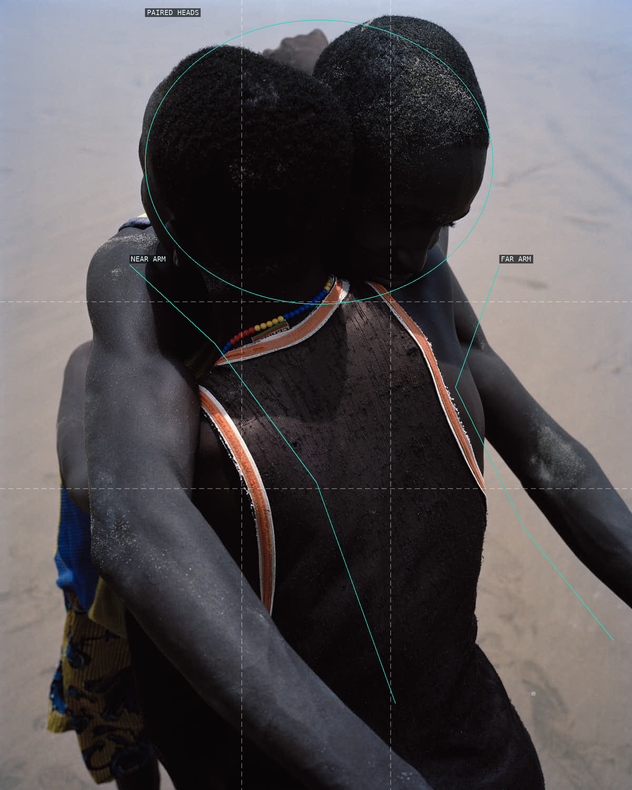
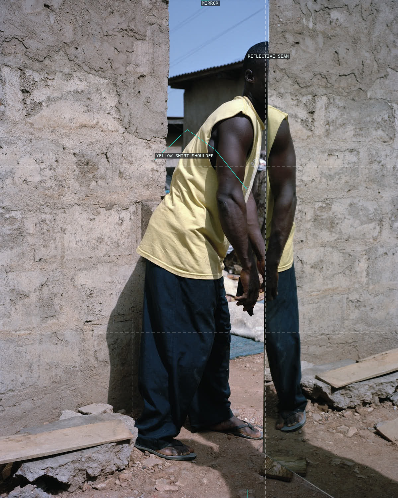
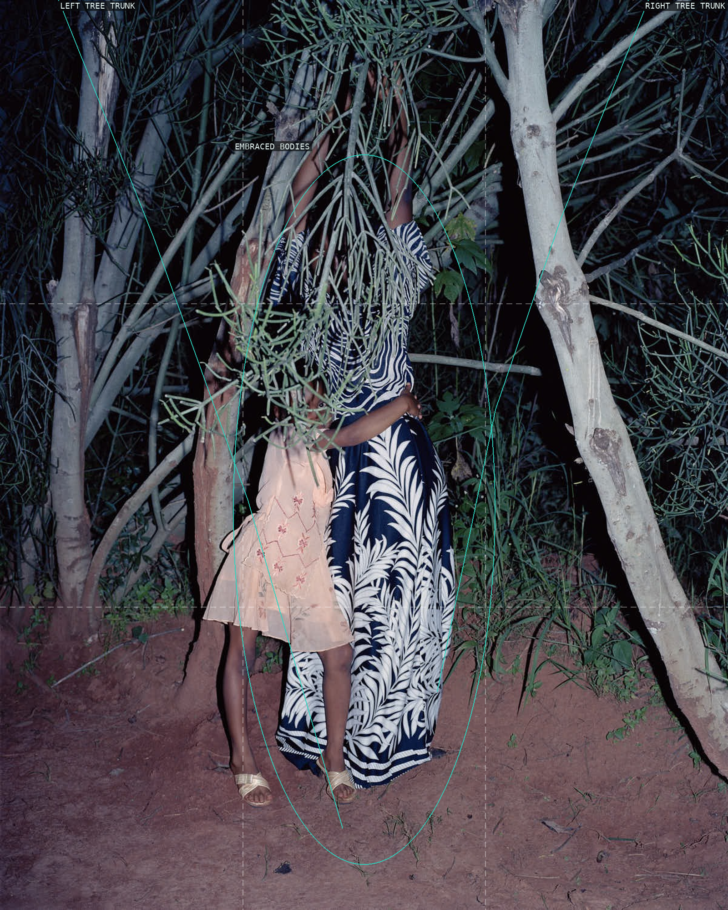
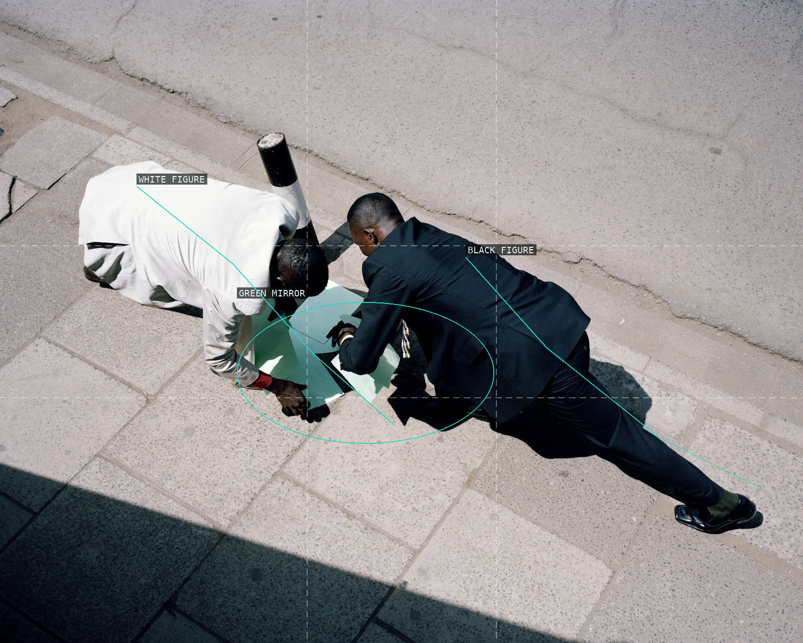
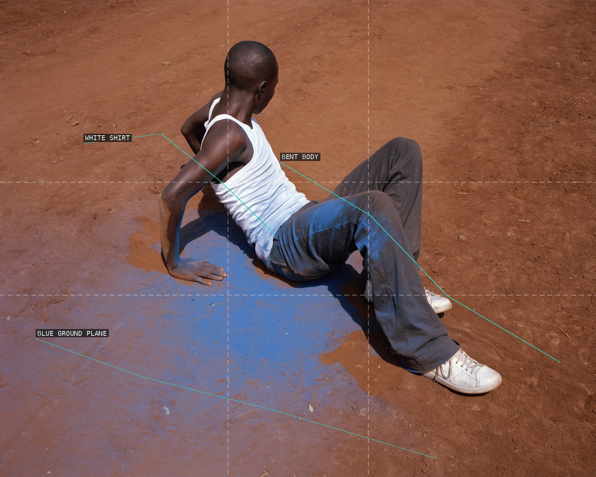
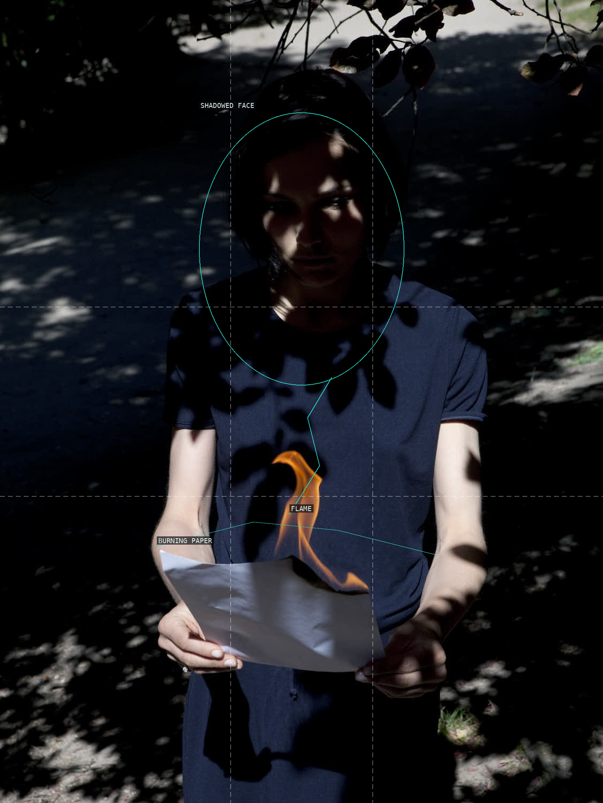
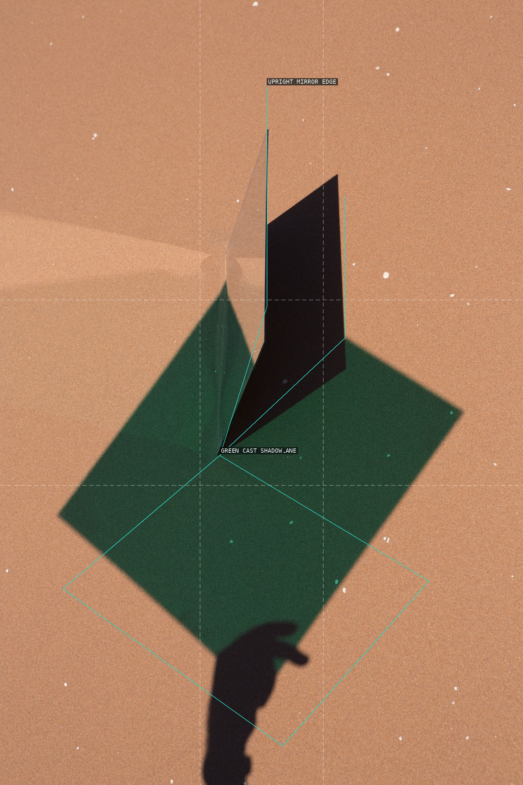
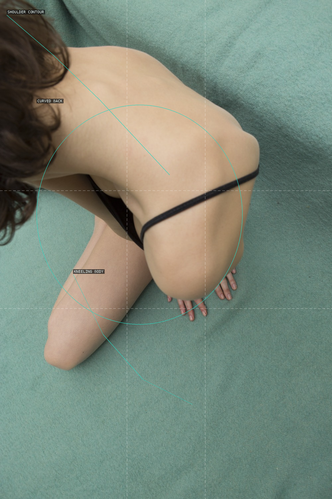
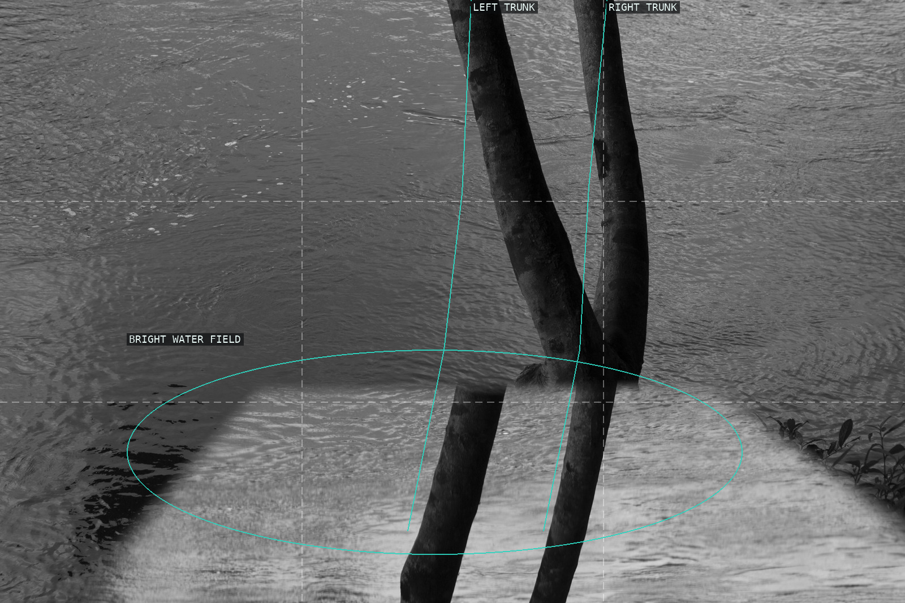
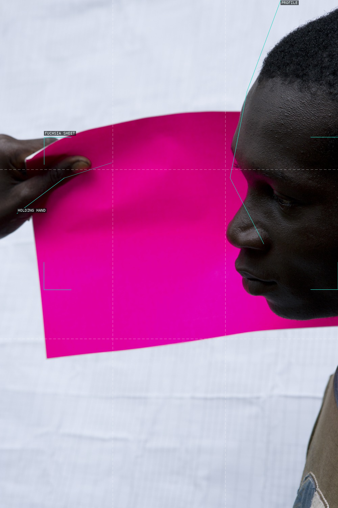

/* viviane-sassen - proofs */
10 plates. Deterministic overlays rendered by the composition-analysis skill.

01-totem
A paired head mass and two arms make the tightly cropped portrait read as one compact, asymmetrical body.

02-mirror-man
The narrow mirror divides the body into near and reflected planes while the yellow shirt crosses the seam.

03-dora-and-viola
Two trees hold an embrace whose striped and pale garments fuse into a single vertical mass.

04-jf
Two diagonal bodies lean into a small green mirror, with their shadow acting as a third dark shape.

05-100-years
Bent bodies meet across a colored sheet while the large lower shadow makes the pavement a graphic stage.

06-testament
A small flame breaks the portrait's darkness, joining a shadowed face to the paper held at the lower threshold.

07-axiom-g03
A slim upright mirror splits the sand into a black reflected wedge and a broad green shadow.

08-marte-01
A cropped shoulder and a kneeling body make the pool-colored field feel like a shallow sculptural plane.

09-mirari-2
Two dark trunks interrupt an expanse of water whose bright lower reflection makes the frame breathe sideways.

10-almando-fuchsia
A saturated sheet spans between a hand and a profile, making color the image's central plane.